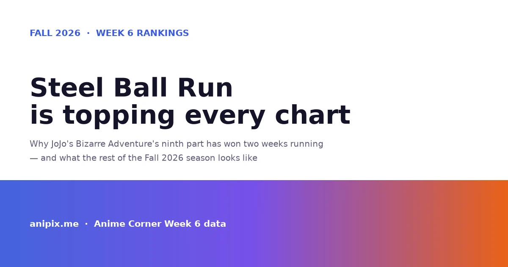
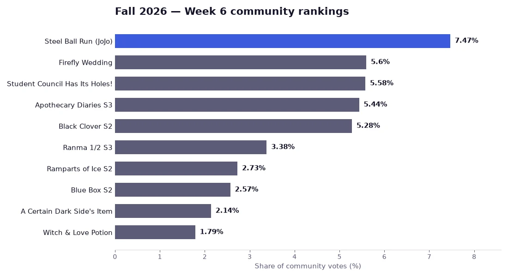
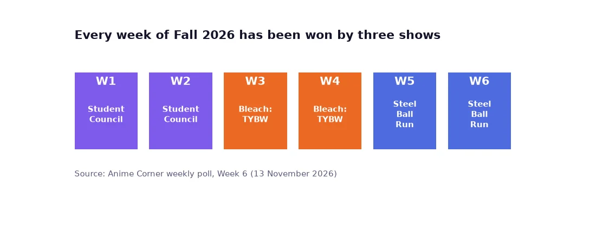
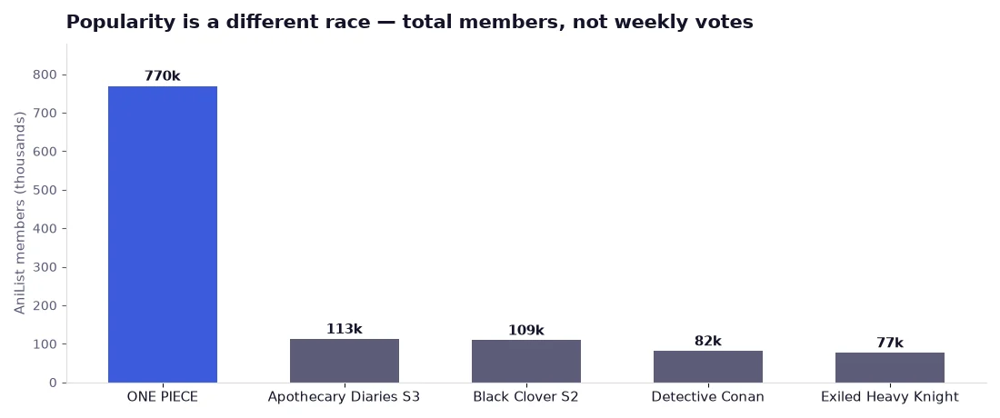

Steel Ball Run Is Topping Every Chart: Fall 2026 Week 6 Rankings Explained

Six weeks into the Fall 2026 season, one show has separated itself from the pack, and it is not the one most people would have guessed in September.
STEEL BALL RUN JoJo's Bizarre Adventure 2nd – 3rd STAGE took first place in the Week 6 community rankings with 7.47% of the vote. It is the second week in a row it has finished on top, and the margin is not close: second place sits more than a full point behind.
This is the ranking for the week ending 13 November 2026, and it says something interesting about a season that has been unusually competitive at the top and unusually thin further down.

What Steel Ball Run actually is
For anyone who has not followed the series for twenty years, the naming is confusing. Steel Ball Run began in 2004 as the seventh part of JoJo's Bizarre Adventure, written and drawn by Hirohiko Araki. It ran in Weekly Shonen Jump until 2011, when it moved to Ultra Jump and was eventually reclassified as Part 7, with the two parts that follow renumbered around it.
The story is a reset. After Part 6 ended the original continuity, Araki restarted the series in a new universe with familiar names attached to different people. Steel Ball Run is set in 1890 and follows a continent-spanning horse race across the United States, with a prize of fifty million dollars, a cast of competitors who are all hiding something, and a supernatural MacGuffin in the form of scattered holy relics.
Its two leads are Johnny Joestar, a former racing prodigy left paralysed, and Gyro Zeppeli, an executioner's son who races with steel balls he can spin to strange effect. Their partnership is the best-written relationship Araki has done, and it is the reason the part has a reputation among long-time fans as the series' high point.
The anime adaptation has been released in stages rather than as one continuous season, which is why the current entry is titled 2nd – 3rd STAGE. It covers the middle of the race rather than the beginning.
Why it is winning
Three reasons, and only one of them is about quality.
The structure suits weekly viewing. A race is a natural episodic engine. Every stage has a start, an obstacle, a finish and a new location, so each episode delivers a complete unit of tension. Most seasonal anime cannot do that: they are adapting a continuous story and have to break it wherever the episode happens to end.
It has a built-in audience that has waited a long time. Steel Ball Run is the part JoJo readers have been asking for since the anime began. The people voting in these polls are largely the people who already loved the manga, and they are motivated in a way that viewers of a new show are not.
It is genuinely well made. The animation has held up across the run, the colour work is doing the heavy lifting Araki's art demands, and the adaptation has been willing to cut rather than pad. That last point matters more than it sounds — a bad Steel Ball Run adaptation would have been a scandal, and it is not one.
The rest of the top five
Firefly Wedding returned to second with 5.60%, up one place. It has now finished in the top three for five consecutive weeks, which is the most consistent run in the season and has gone almost unnoticed because it has never actually won.
Even the Student Council Has Its Holes! dropped to third at 5.58% — a gap of two hundredths of a percentage point from second place. The two shows have now swapped positions twice.
The Apothecary Diaries Season 3 sits fourth at 5.44%. On a different chart it is first: by raw audience numbers on LiveChart it is the most-watched show of the season, ahead of everything else airing. It is the clearest example this season of the gap between "most people watching" and "most people voting in a poll".
Black Clover Season 2 rounds out the top five at 5.28%, and it holds the season's highest average score at 88. A show that finished years ago, brought back for a continuation, currently rated best of the season.

Six weeks, three winners
The season has split cleanly. Even the Student Council Has Its Holes! won Weeks 1 and 2. Bleach: Thousand-Year Blood War – The Calamity took Weeks 3 and 4. Steel Ball Run has now taken Weeks 5 and 6.
That pattern is worth watching. The first six weeks produced three two-week runs and nothing longer. If Steel Ball Run wins Week 7, it becomes the first show this season to hold the top spot for three consecutive weeks, and the season starts to look like a one-horse race in the literal sense.
Three charts, three different answers
The most useful thing about this season is how badly the charts disagree, because the disagreement tells you what each one measures.
Weekly vote share measures enthusiasm. It rewards shows with a passionate, organised audience, which is why a long-awaited adaptation like Steel Ball Run can beat a show with five times its viewership.
Total members on a tracking site measures accumulated audience. ONE PIECE leads that by an enormous margin — around 769,000 users, roughly seven times the second-place show — and it is not even airing new episodes right now.
Average score measures satisfaction among the people who watched. Black Clover Season 2 leads that with 88.
None of these is wrong. A show can be the most-watched, the most-loved and the least-voted-for all at once, and this season has examples of each.

Where the season stands further down
Below the top ten the numbers fall away fast. Tenth place is under 2%, and the drop from fifth to tenth is steeper than the drop from first to fifth.
The Detective Is Already Dead Season 2 sits at 17th with 1.60%, which is a fair reflection of how that sequel has landed: a devoted core audience, a much larger group who bounced off the first season, and very little movement in between. Blue Box Season 2 is eighth at 2.57%, comfortably the strongest of the romance sequels.
What is airing this week
If you want to catch up before the next poll closes, these are the episodes landing in the next few days, Japan time:
- Black Clover Season 2 — episode 7, 14 November, 23:00
- Blue Box Season 2 — episode 6, 15 November, 16:30
- Overgeared — episode 8, 15 November, 23:30
- Reincarnated as a Sword Season 2 — episode 8, 19 November, 00:30
- The Apothecary Diaries Season 3 — episode 8, 20 November, 23:00
- Firefly Wedding — episode 7, 20 November, 23:30
The short version
Steel Ball Run is winning because it is a well-made adaptation of the most-loved part of a forty-year-old series, released into a season where nothing else has managed to hold the top spot for more than a fortnight. That is a real achievement and it is also partly a scheduling accident.
The Apothecary Diaries Season 3 is probably the better show by most measures. Black Clover Season 2 is the best-rated. ONE PIECE is the biggest by a factor of seven. And the poll is being won by the one with the loudest fans.
All four of those statements are true at once, which is what makes following the season week to week more interesting than any single ranking suggests.